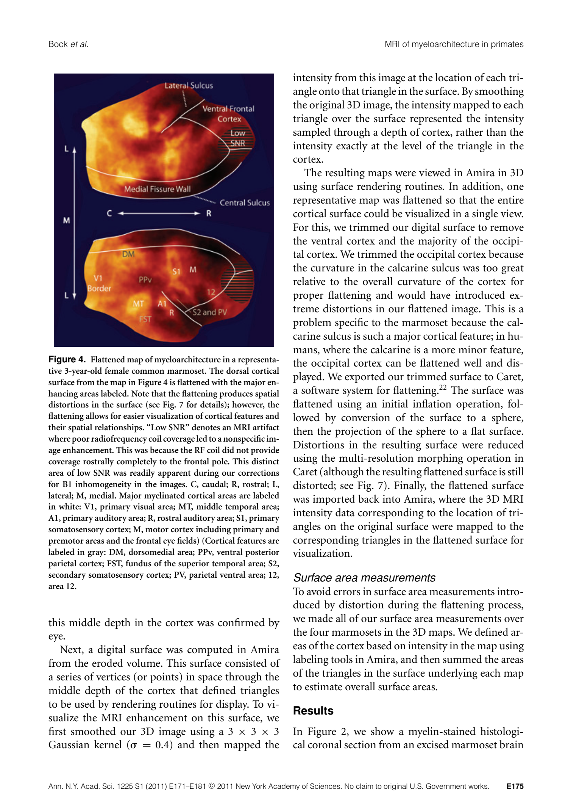

fig04_MRI_flatmap_source — illustrative_MRI_map
Source retained for review; no anatomical ROI was invented. See published_areas.csv for Table1.


No field ROI — Calibrated TIFF
| Field | mm² | % neocortex | Status |
|---|---|---|---|
| M1 | NA | NA | not_measurable |
| S1 | NA | NA | not_measurable |
| V1 | NA | NA | not_measurable |
| MT | NA | NA | not_measurable |
| A1_R | NA | NA | not_measurable |
| whole_neocortex | NA | NA | not_measurable |